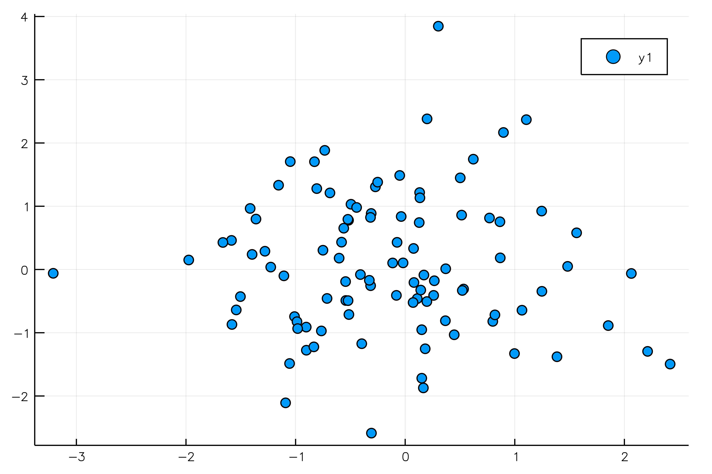
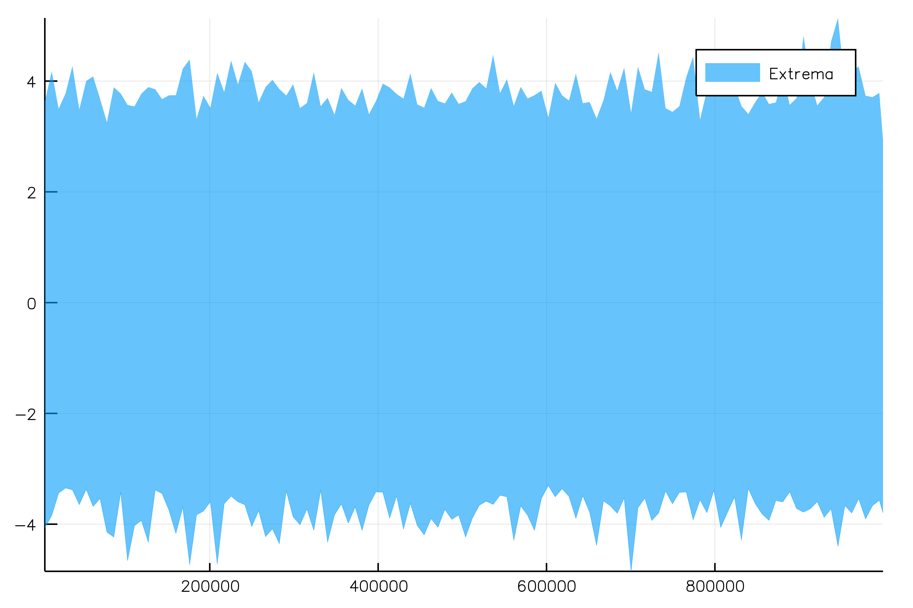
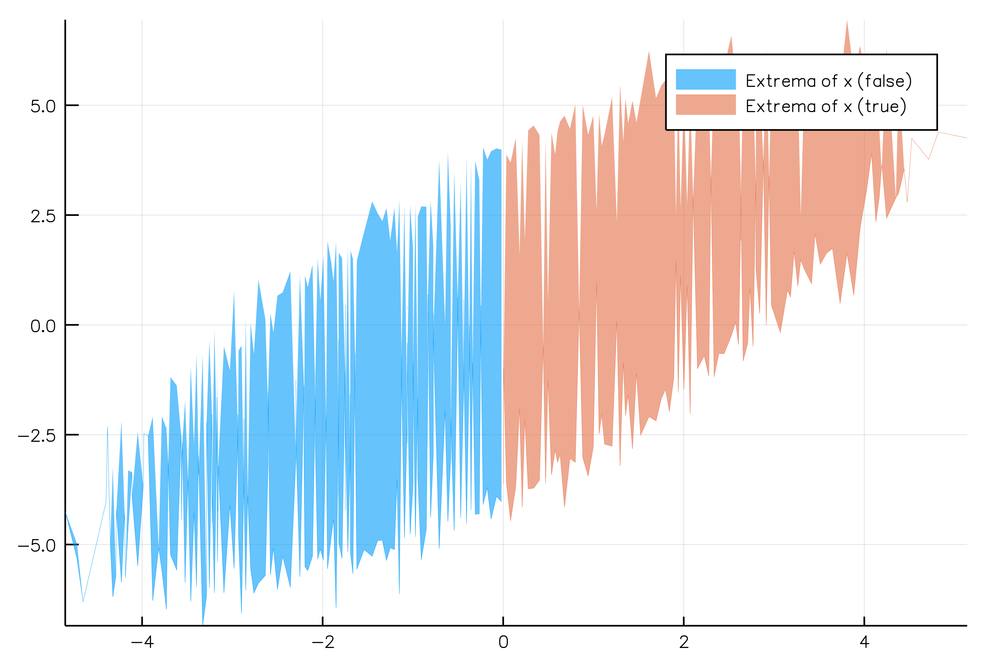

Plotting
StatPlots
JuliaDB has all access to all the power and flexibility of Plots via StatPlots and the @df macro.
using JuliaDB, StatPlots
t = table(@NT(x = randn(100), y = randn(100)))
@df t scatter(:x, :y)
partitionplot
JuliaDB.partitionplot — Function.partitionplot(table, y; stat=Extrema(), nparts=100, by=nothing, dropmissing=false)
partitionplot(table, x, y; stat=Extrema(), nparts=100, by=nothing, dropmissing=false)Plot a summary of variable y against x (1:length(y) if not specified). Using nparts approximately-equal sections along the x-axis, the data in y over each section is summarized by stat.
Examples
using JuliaDB, Plots, OnlineStats
x = randn(10^6)
y = x + randn(10^6)
z = x .> 0
t = table(@NT(x=x, y=y, z=z))
# x by itself
partitionplot(t, :x, stat = Extrema())
# y by x
partitionplot(t, :x, :y, stat = Hist(25))
# y by x, grouped by z
partitionplot(t, :x, :y, stat = Extrema(), by = z)